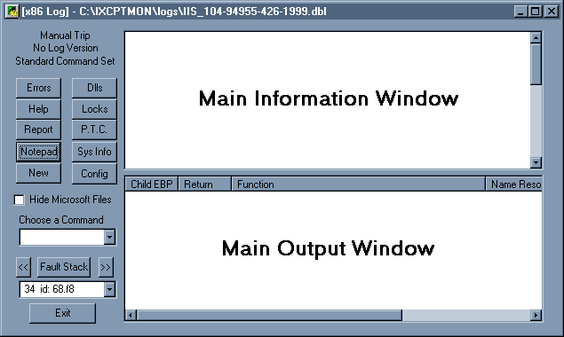
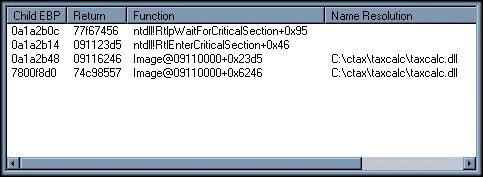
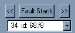
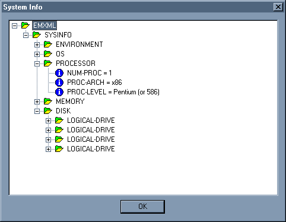
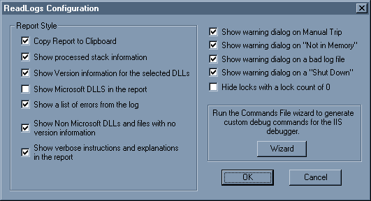
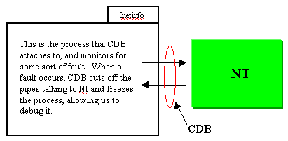
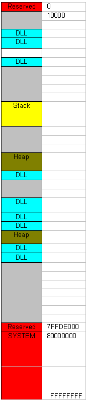
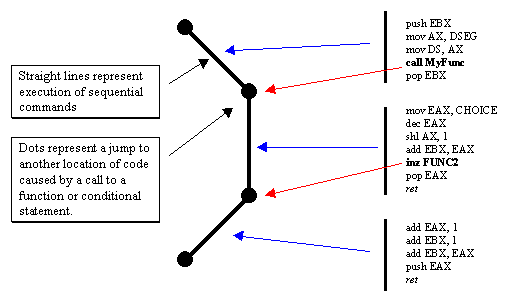

|
| ||
|
| ||
Geoff Gray
Internet Server Support Engineer
Microsoft Technical Support
Updated April 26, 1999
Contents
Introduction
Background
Walking Through a Log Analysis
Stack List
IIS Exception Monitor Commands Wizard
Understanding Windows NT and Debuggers
Heap and Stack Corruption
CDB Commands Used by the Exception Monitor
More General Analysis Information
Building Debug Files
Conclusion
This article explains the use of the Microsoft® Internet Information Server (IIS) Exception Monitor Log File Analyzer (readlogs.exe), the IIS Exception Monitor Commands Wizard (cmdswiz.exe), and concepts of debugging in general. These tools work in conjunction with the IIS Exception Monitor to help narrow down various crashes and problems with your IIS Web server. For complete information on the IIS Exception Monitor, see the MSDN Online Web Workshop article "Troubleshooting with the IIS Exception Monitor."
Once you use the IIS Exception Monitor to generate a log for troubleshooting your Web server, you need to look at the log and determine what the problem is. ReadLogs breaks the log down into its various components for easy analysis. It allows you to view the different components quickly and use them to see what is really happening. These are some of the things that ReadLogs does:
ReadLogs also performs a number of other functions automatically, which are explained further in this document. As well, this document talks about several things for you to consider when you are looking at the output so you can understand what is actually being reported by ReadLogs.
It is important to note that while ReadLogs will make analysis easier, it is not guaranteed that you will always see the actual problem from the log files you have. ReadLogs (and the entire IIS Exception Monitor suite of tools) is designed to point you in the right direction, but sometimes, extra work will be necessary to fully diagnose your problem.
When you installed the IIS Exception Monitor, ReadLogs was automatically installed as well. You can run the program directly from the IIS Exception Monitor, or as a stand-alone application from the Exception Monitor Program group.
This is the main window for ReadLogs. From here, you can view all of the different aspects of the log file. The following section outlines the functionality of each of the controls and the expected output that accompanies each.

Figure 1. The Log File Analyzer main window
When you open a log file with ReadLogs, the window shown in Figure 1 is displayed.
Note The Main Information Window and Main Output Window will be populated with information relevant to the log you are analyzing. You can quickly see the following information displayed as well, in the upper-left corner of the dialog:
When you first parse a log or choose a function of the program, the analyzer will insert a message in this window. Sometimes it is data (discussed in other sections of help), or it is a brief description of what you just did or the results of the action. The information provided is dynamic, meaning the information is based on both the action you took and the results of some parsing of the log. This is some of the information you can expect in the box:
The style of this window changes depending on what information you are viewing. Examples of outputs are described and displayed on each of the relevant function help pages. This is some of the information you can expect in the box:

Figure 2. This window appears when you click the Stack List button in the Log File Analyzer window.
The thread stacks are probably the single most important part of an automatic debug, or any debug for that matter. A thread stack shows what code was executing at the time of the crash. This information is used to see what DLLs and functions within the DLLs were being executed. A stack is read from the bottom up, showing that the DLL and function on the last line called the DLL and function on the next line up, and so on. Keep the following points in mind when reading these stacks:
By default, when you parse a new log, the faulting stack is shown in the main output window. ReadLogs determines which thread stack is the faulting stack by reading the debug command prompt in the log. The Exception Monitor, when tripped, always sets itself to the thread that caused the trip. It also sets its prompt to reflect this as follows: x:yyy>. The x indicates the number of the processor that the thread was running on, and yyy indicates the number of the thread.
There are cases where you will want to view other threads besides the faulting thread. ReadLogs gives you a number of ways of moving through the threads. The panel below shows the controls used, with explanations following.

Figure 3. Buttons and drop-down list available to view the stacks
One of the reasons you might wish to examine other threads is to help troubleshoot 100 percent CPU utilization problems. This is a situation where the processor (or processors) is running at 100 percent and the computer becomes sluggish and/or appears to stop responding. If you know that a specific thread was using all of the CPU cycles at the time of the crash, then choose the thread from the list to see what was happening at that time. If you are interested in seeing what else the system was doing when it crashed, you can navigate through several threads.
When you click on the DLLs button, the main output window will show a list of all currently loaded DLLs. This list is sorted numerically based on the starting address of the DLL. The list shows the starting address (also known as the base address), the ending address, and the name (including the path) of the DLL. If a DLL shows up in this list, it means that it has been called at least once during the time IIS was running. The IIS Exception Monitor uses the command !inetdbg.mod to obtain a list of loaded DLLs.
If you select the Hide Microsoft Files check box, you will get a list of all files that either have no version information, or have version information that does not contain the word Microsoft in the CompanyName field. This is helpful if you want to quickly see what third-party DLLs are being loaded.
The log file contains version information for every DLL that it could retrieve this from. If you click on the starting address for any DLL, the Main Information Window will display the version information that's available. If the IIS Exception Monitor could not get any version information, the Main Information Window will say that no version information was available. The IIS Exception Monitor uses the command !inetdbg.ver to obtain version information for loaded DLLs.
When you click on the Errors button, the Main Output Window will list all errors detected in the log. This list includes warnings (such as symbol mismatches), errors (such as symbols that could not be loaded), and NTSD errors (these are explained below). The IIS Exception Monitor does not have any explicit commands for trapping errors. These errors simply show up throughout the log. Later in this document, you will learn how to set the IIS Exception Monitor to trap some of these errors.
There can be several errors in the log in the form of "NTSD: Exception Number xxxxxxxx". These are Windows NT, IIS, or application-specific error codes. Usually, these errors are not severe enough to trip the session. They indicate that something failed, but it did not crash the server. Sometimes these errors will point to the actual problem, but most of the time they simply indicate that there are small problems that should be addressed after the server is stabilized again.
When ReadLogs encounters an error of this type, it tries to resolve the error and display information about it. ReadLogs uses a built-in Windows NT API call to resolve these errors. It passes the eight-digit error code to the Win32 API FormatMessage() function, which looks up the code in Windows NT's internal error list. If the code is there, Windows NT responds with an interpretation of the error. These errors can also be seen if you have a copy of the Windows C header file Winerror.h. In the event that the error is not resolved, it usually means that the error code is specific to some application (possibly even IIS) and ReadLogs does not have access to the error codes.
Let's first discuss what a lock is, and why it is important.
A lock occurs whenever a thread (a piece of running code) needs to access something exclusively. The thread will request a lock, and if it can, the system will give the lock to the thread. At this point, nothing else in the system can access the locked object. This is handy whenever a thread is writing information to a file and it wants to be sure that no other thread is writing to it at the same time. When the thread is finished, it releases the lock. This happens all the time and is a normal part of any multithreaded application (that is well written). It is also important to note that even though a particular object can only have one lock on it at a time, multiple objects can each have their own lock.
So far, this all sounds benign. The problem arises when two or more threads have objects locked, but each one is waiting on the other one to be able to finish. This creates a problem similar to a law in the state of Texas: "When two trains meet at a railroad crossing, both shall come to a complete halt, and neither shall pass until the other has passed." We reach a state known as a deadlock.
This is one of the few scenarios where we will need to manually trip the session. When we reach a deadlock, the server will appear to hang. A manual trip will dump the information we need to resolve this problem. If you have a manually-tripped log, and the issue is a deadlock, click the Locks button to retrieve this information. If the Locks window is blank, then the situation is most likely not a deadlock.
When you click the Locks button, the Main Output Window will show a list of all locks detected in the log, along with the id for the owning thread and the lock count for the lock. If you click on the owning thread id, the Main Information Window will display the stack for the thread that owns the lock. Using this information and the sample scenario below, you can determine if there is a deadlock issue. The IIS Exception Monitor uses the !locks command to get locks information.
The following is a sample output that will show up.
CritSec ftpsvc2!g_csServiceEntryLock+0 at 6833dd68 LockCount 0 RecursionCount 1 OwningThread a7 EntryCount 0 ContentionCount 0 *** Locked CritSec isatq!AtqActiveContextList+a8 at 68629100 LockCount 2 RecursionCount 1 OwningThread a3 EntryCount 2 ContentionCount 2 *** Locked CritSec +24e750 at 24e750 LockCount 6 RecursionCount 1 OwningThread a9 EntryCount 6 ContentionCount 6 *** Locked
Looking at the second lock in this example, we notice that the owning thread is #a3. We can find this thread in the output from the ~*kb command. In our case it is thread #4:
4 id: 97. a3 Suspend: 0 Teb 7ffd9000 Unfrozen ChildEBP RetAddr Args to Child 014cfe64 77f6cc7b 00000460 00000000 00000000 ntdll!NtWaitForSingleObject+0xb 014cfed8 77f67456 0024e750 6833adb8 0024e750 ntdll!RtlpWaitForCriticalSection+0xaa 014cfee0 6833adb8 0024e750 80000000 01f21cb8 ntdll!RtlEnterCriticalSection+0x46 014cfef4 6833ad8f 01f21cb8 000a41f0 014cff20 ftpsvc2!DereferenceUserDataAndKill+0x24 014cff04 6833324a 01f21cb8 00000000 00000079 ftpsvc2!ProcessUserAsyncIoCompletion+0x2a 014cff20 68627260 01f21e0c 00000000 00000079 ftpsvc2!ProcessAtqCompletion+0x32 014cff40 686249a5 000a41f0 00000001 686290e8 isatq!I_TimeOutContext+0x87 014cff5c 68621ea7 00000000 00000001 0000001e isatq!AtqProcessTimeoutOfRequests_33+0x4f 014cff70 68621e66 68629148 000ad1b8 686230c0 isatq!I_AtqTimeOutWorker+0x30 014cff7c 686230c0 00000000 00000001 000c000a isatq!I_AtqTimeoutCompletion+0x38 014cffb8 77f04f2c 00000000 00000001 000c000a isatq!SchedulerThread_297+0x2f 00000001 000003e6 00000000 00000001 000c000a kernel32!BaseThreadStart+0x51
Once we're in this thread, we notice that it has a call to WaitForCriticalSection function, which means that not only does it have a lock, it is waiting for an object that is locked by something else. We can find out what the object is locked by, by looking at the first parameter of the call WaitForCriticalSection. In this case, it is waiting on 24e750. Now we go back to the locks command, and look at the third critical section:
CritSec +24e750 at 24e750 LockCount 6 RecursionCount 1 OwningThread a9 EntryCount 6 ContentionCount 6 *** Locked
Because of this, we know that thread four (which owns the second lock) is waiting on the third lock. This is still OK, because when it gets released, we can continue processing. So let's analyze the third lock. Its thread is #a9. Looking it up in ~*kb, we get:
6 id: 97. a9 Suspend: 0 Teb 7ffd7000 Unfrozen ChildEBP RetAddr Args to Child 0155fe38 77f6cc7b 00000414 00000000 00000000 ntdll!NtWaitForSingleObject+0xb 0155feac 77f67456 68629100 6862142e 68629100 ntdll!RtlpWaitForCriticalSection+0xaa 0155feb4 6862142e 68629100 0009f238 686222e1 ntdll!RtlEnterCriticalSection+0x46 0155fec0 686222e1 0009f25c 00000001 0009f238 isatq!ATQ_CONTEXT_LISTHEAD__RemoveFromList+0xb 0155fed0 68621412 0009f238 686213d1 0009f238 isatq!ATQ_CONTEXT__CleanupAndRelease+0x30 0155fed8 686213d1 0009f238 00000001 01f26bcc isatq!AtqpReuseOrFreeContext+0x3f 0155fee8 683331f7 0009f238 00000001 01f26bf0 isatq!AtqFreeContext+0x36 0155fefc 6833984b ffffffff 00000000 00000000 ftpsvc2!ASYNC_IO_CONNECTION__SetNewSocket+0x26 0155ff18 6833adcd 77f05154 01f26a58 00000000 ftpsvc2!USER_DATA__Cleanup+0x47 0155ff28 6833ad8f 01f26a58 000a3410 0155ff54 ftpsvc2!DereferenceUserDataAndKill+0x39 0155ff38 6833324a 01f26a58 00000000 00000040 ftpsvc2!ProcessUserAsyncIoCompletion+0x2a 0155ff54 686211eb 01f26bac 00000000 00000040 ftpsvc2!ProcessAtqCompletion+0x32 0155ff88 68622676 000a3464 00000000 000a3414 isatq!AtqpProcessContext+0xa7 0155ffb8 77f04f2c abcdef01 ffffffff 000ad1b0 isatq!AtqPoolThread+0x32 0155ffec 00000000 68622644 abcdef01 00000000 kernel32!BaseThreadStart+0x51
Looking at this thread, we notice that it is also waiting on a locked item to be freed. This is still OK. Now, let's see what lock it is waiting on. The address is listed above as the first argument to the WaitForCriticalSection() function, just as we saw before. Let's look this one up in our locks list:
CritSec isatq!AtqActiveContextList+a8 at 68629100 LockCount 2 RecursionCount 1 OwningThread a3 EntryCount 2 ContentionCount 2 *** Locked
Oops! This is lock number 2. Now we see the problem. Lock 2 is owned by thread 4, which is waiting on lock 3, which is owned by thread 6, which in turn is waiting on lock 2. This is a deadlock. In order to discern what is happening, you need to analyze threads 4 and 6 and determine what they were doing so you can see what originally caused the deadlock. General debugging of this type is discussed elsewhere in this help.
The Report button generates a report and places it in the Main Output Window. By default, the report will also be placed in the Clipboard so you can paste it into any other application that you choose. To customize the information showing up in the report, see the section on the CONFIG button.
P.T.C. stands for Prior To Crash. Clicking this button will display the last 20 lines in the log prior to the crash. This might be useful if you want to see what was happening right before IIS crashed. The number of lines displayed is configurable by setting the following key in the registry:
HKEY_CURRENT_USER\Software\ReadLogs\READLOGS\Settings\LinesForPTC
The Sys Info button will display a dialog box that shows a tree view of various different system settings and versions. This might be useful for verifying information about the machine you are debugging.
Note This feature is only available in logs generated with Exception Monitor version 6.1 or greater. The IIS Exception Monitor uses the !emdbg.sysinfo command to get this information. The emdbg debug extension is an add-on for IIS Exception Monitor written by the IIS Exception Monitor team.

Figure 4. The System Info window
With this dialog, you can customize ReadLogs. All settings are retained the next time you start ReadLogs, and are in two parts. The first part (surrounded by the grouping box) pertains to how ReadLogs generates your reports. The second part sets how ReadLogs warns you about certain logs. The lists following describe each setting.
Note The Wizard button and its functionality are described in the section "IIS Exception Monitor Commands Wizard."

Figure 5. The ReadLogs Configuration dialog box
Parameters that affect the report:
Parameters that affect the message boxes:
Notepad - opens the log file in Notepad
Help - takes you to the Microsoft Web site and opens this document
New - allows you to open a new log file
The Commands Wizard (cmdswiz.exe) is accessible from the Exception Monitor Program Group, or by clicking the Config button inside ReadLogs. This wizard is used to generate alternate command files for the Exception Monitor to run during an analysis session. These command sets determine what information will show up in the log file.
You might want to use an alternate command set to track down more specific information that may not normally be needed. When ReadLogs analyzes a log file, it will determine if an alternate command set is needed or would help, and will add a note to the report to use an alternate command set. It will also tell you which command set you want to use.
The following command sets are currently available in the Commands Wizard:
The Commands Wizard also allows you to customize the command sets you choose, and to save these for future use. Once you have chosen a command set, you can modify it by deleting, adding, or changing the order of the commands in the set. When you save the new command set, give it a descriptive title and a brief explanation of its purpose. This information will appear the next time you run the Commands Wizard.
The IIS Exception Monitor is based on the Windows NT debugger, cdb.exe. This is a user-level debugger, which means that it can debug user-mode processes, and not kernel-mode. IIS runs in a process called inetinfo.exe, so the IIS Exception Monitor attaches the debugger to this process to debug it. If you are running IIS 4.0 and want to debug an out-of-process application, you will be attaching to a process called mtx.exe. There can be many copies of the MTX process (one for inetinfo and one for every out-of-process application you are running.) The IIS Exception Monitor has instructions on determining which version of MTX to attach to if you need to debug an out-of-process application.
CDB works by looking for some sort of access violation. When one occurs, Windows NT raises a flag that activates the debugger and halts the process the debugger is attached to. Since the process is halted, the entire memory space for the process is retained in the exact state it was in at the time of the violation. This allows us to run commands from CDB that dump certain information from this memory to our log.

Figure 6
I'll give you primer on this since I refer to processes, threads, and stacks throughout this article. Complete information regarding this can be found in the following books:
Advanced Windows - Third Edition, by Jeffrey Richter (Microsoft Press)
Inside Windows NT - Second Edition, by David Solomon (Microsoft Press)
A process is basically an instance of a running program. In our case, the running program is inetinfo.exe. A thread is a path of execution within a process. These terms set up the concept of how Windows NT operates. Inetinfo starts up (creating the Inetinfo process we see in Task Manager) and inside it, there are one or more threads that actually execute all of the code that produces our Web site. It is these threads that actually do the work, access the memory, and produce the output of IIS (or any program for that matter). IIS is a multi-threaded application, which means that many different threads can be running simultaneously, and independently, of each other. Because of this, IIS can handle many user requests at the same time, which is great for the group running the Web server.
Windows NT is a multi-tasking, multi-threaded operating system, which means that multiple applications can run at the same time, and each of these applications can handle multiple tasks at the same time. Windows NT does this by slicing up the CPU's time among all of the threads that are active and allowing each thread to have a time slice. If we consider this fact, we can now see that at any given time, there is only one thread running on any given processor. The time slices are short enough that the threads appear to be running at the same time, when in fact they are not. This actually makes debugging easier since we know that if a problem occurs, it had be generated by the thread that's currently active. We will see as we dissect this further that this does NOT guarantee that the faulting thread was the culprit. It may actually have been a victim of another thread (see the section on heap corruption).
This article does not contain any information on how Windows NT manages the execution of threads (see the books listed above for a discussion on this). I will, though, point out that threads can voluntarily give up some of their time for any number of reasons, including that they may be waiting for some information from another thread, or from the user. If this is the case, you will see calls on the stack such as:
Any of these calls simply means that the thread making this call wants to step aside and wait for some event to occur before it continues with its work. Windows NT will "wake up" the thread when it can continue processing.
This section describes the basic usage of memory in the process (in our case Inetinfo). Remember that in Windows NT, each process gets 4 GB of virtually addressable memory, but 2 GB of that is system memory. The system memory is shared, meaning that only one copy exists and is shared by all of the processes. The following table outlines how the memory space is mapped out for any user-mode process in Windows NT 4.
Note This map does not necessarily apply to Windows NT Enterprise Edition. Windows NT Enterprise can have 3 GB of user memory and 1 GB of system memory).
| Range (in hex) | Size | Function |
| 0 - FFFF | 64K | No access region |
| 10000 - 7FFEFFFF | 2Gb - 192K | Private process address space |
| 7FFDE000 - 7FFFFFFF | 136K | Reserved for various Windows NT functions |
| 80000000 - FFFFFFFF | 2Gb | System memory |
I stated that each process in Windows NT gets 4 GB of memory, but how is this possible when some systems running Windows NT have only 64 MB of actual memory (or even less)? Well, the process actually has a 4 GB virtual address space and does not necessarily use the entire 4 GB. To understand why Windows NT does this, let's look at a basic programming concept.
With older DOS programs, we had to be concerned with how big the memory space was that we would be running the program in. We built different versions of the program for the differently-sized machines. We also had to consider whether we were using extended or expanded memory, or if we even had extra memory. By allowing Windows NT to set a virtual address space of 4 GB, all programs are now running in a flat memory model. We no longer need to worry about how to compile our programs. We just let Windows NT translate the calls from the virtual address to the physical address.
When we are debugging a user-mode application such as IIS, we don't care what translation is occurring because the debugger displays all memory as the program sees it, in the virtual address space.
When a process starts on Windows NT, the memory space is built and then the memory inside the space is laid out. The way the memory gets laid out specifically depends on the application, but the same general principles apply to all processes. There are four parts to the memory of a process:

Figure 7
Windows NT uses two different methods for allowing your program to store and use data; heaps and virtually allocated memory (there is also the ability to do memory mapped files, but that is beyond the scope of this document). The heap is memory that Windows NT reserves for your application and allows you to access. The heap is usually best used for large numbers of small pieces of data. Virtually allocated memory is memory that your program specifically reserves itself and is usually used to store large pieces of data. There are a few things to point out about the differences of these types of memory allocation:
Virtually allocated memory can be shared between processes, allowing the memory to act as a means of sharing data. Heap memory cannot be shared.
The "private bytes" counter in Performance Monitor does not show any shared memory and therefore may not be the actual size of the memory being currently used.
Windows NT generates a default heap that is 1 MB in size. Windows NT will automatically adjust the size of the heap as more space is needed. To view a detailed analysis of a process's memory, you can use the Windows NT Resource Kit utility pviewer.exe.
DLLs are a core part of allowing Windows to be as powerful and fast as it is today. The concept is very simple. A library is a set of routines that a program might wish to use. They are usually common routines that might get used by several programs. To keep you from having to rewrite the routines every time you want to use them, you build a library once, and then include it with your program. In order to use the library's routines, the library must be linked to the program. This is usually done at development time.
The problem with this approach is that every program has to have a copy of the library, which can eat up memory and disk space quickly. Windows gets around this with the DLL by allowing the library to be linked to the application at run-time (when the application is executing). It also allows this DLL to be shared among many different applications so that only one copy is loaded into memory even though five applications might be using it.
Another advantage of DLLs is that they do not need to remain in memory. If you have ten different DLLs that each only get used once, you can unload each after it is through, thus saving memory for other more important tasks. However, DLLs that are fundamental to your program can be loaded once and remain in memory for the duration of the program so that they are always ready to be used.
While looking at debug output, you will often notice references to a DLL relocation due to a collision with another DLL. This is normal for the Windows environment. When a DLL is built, it gets assigned a preferred address to load into when it runs. However, if there is another DLL in the memory when it tries to load, it will get a collision and Windows NT will move it to another location and load it. Then Windows NT will take care of translating all the calls to the DLL to this new memory location. To see the preferred loading address of a DLL, right-click on the DLL name and choose Quick View. This will display header information about the DLL. Find Image Base -- that is the preferred loading address.
As stated above, the code memory is read-only. When a debugger attaches to a process and attempts to modify the code, such as adding a breakpoint, Windows NT changes the memory from read-only to copy-on-write. This essentially makes a copy of the code and allows the debugger to modify the copy. Windows NT then changes the flow of the process to point to the new code. This way if the code being modified is being shared by another process, the other process is unaffected.
This section discusses some general concepts regarding stacks. The specifics of a stack you are working with will depend on the type of CPU platform, the compiler that was used to generate your program, and the way in which the code was written. The following is reproduced from the book Assembler Inside and Out (McGraw Hill Press):
"The stack is designed to hold information temporarily. This is especially important when you are working with procedures.
Most medium- and large-size programs are broken into self-contained modules called procedures. (In high-level languages, these modules are often called functions or subroutines.) When a procedure invokes another procedure, we say that the first one calls the second one. When the second procedure finishes, the program returns to the first procedure.
As part of executing a call instruction, the processor must save the location within the first procedure at which execution will resume when the second procedure is finished. This location is referred to as the return address.
The processor saves the return address by pushing it onto the stack. When the second procedure returns, the processor pops the return address off the stack and resumes execution at that location. Because the stack pops items in a last-in, first-out manner, procedures can call other procedures that call other procedures, and they will all return to the correct location.
Another important use for the stack is to save the contents of the registers at the beginning of a procedure. Before the procedure returns, the registers can be restored by popping the old values off the stack. This leaves each procedure free to use the registers as it sees fit. However, from the point of view of each calling procedure, the registers remain unchanged.
The stack can also be used to pass information from one procedure to another. A procedure can push data onto the stack and then call a second procedure that accesses the data. If necessary, the second procedure can use the stack to pass data back.
A final use for the stack is to hold temporary results that occur during complex operations. Sometimes you will store temporary values in a general register (on the CPU) and sometimes you will push them onto the stack. The method you choose will vary depending on the logic of the specific program."
It is important to note that each thread has its own stack, because each thread needs to be aware of its own history, which will be completely independent of the other threads in the process.
The stack always grows down, from high to low memory addresses. The stack is built by pushing values onto it. The location that the next value is supposed to go is determined by the value of the extended stack pointer (ESP) register. When a value gets pushed on, the ESP gets decremented automatically by the processor and then points to the location for the next piece of information.
Below is a sample of a thread executing. We see pseudo-code for three different functions, and see how one calls the next, which eventually calls the third one. Each time we make a call, we add a frame to the stack to store information that allows us to know how to get back and pass information back and forth.

Figure 8
The line of execution of the program changes when we hit a jump of some type, such as a call or jnz statement. Since this is the point where we move to another section of code to continue execution, this is where we need to save information onto the stack so we can return when we're done. There can be a small or a large amount of data that we need to save. Regardless of the size, all the data that's saved at this point is referred to as a frame. Therefore, in the above example, we actually will add two frames to the stack, one when the top function calls the second function and one more when the second function calls the third function. When the third function returns, the second function gets restored and continues running by restoring its stack frame.
This is essentially a roadmap of what our program is doing. When we analyze logs generated by the Exception Monitor, we can view this roadmap and we'll know what IIS was doing at the time the fault occurred. Each frame on the stack corresponds to a line in the Main Output Window of ReadLogs, either when you first start ReadLogs, or when you click on the Fault Stack button.
OK...heap corruption. Let's see, wh@@@@@@ I waMARY HAD A LITTLE LAMBn this subject.
Wait. Let's try this again. Obviously the above sentence is corrupt (grin). If you consider the space above as memory for the program to use, and you consider the sentence as the data (or code) that the program needs, you can see that the program is going to have a difficult time using this information. This is one form of heap corruption. The heap is a portion of memory that is dedicated to storing information for a program that it needs to retrieve later.
Let's say that thread one of our application decided to discuss something (in this case heap corruption), and thread two of our application decided it wanted to sing a song. Well, thread one was given some memory off the heap to store its monologue, and it wrote the monologue to this memory.
Now let's say that thread two was also given some memory, but it was so happy about singing its song that it forgot where its memory was, so it just started wherever it pleased. Boom! It just overwrote the monologue for thread one. Well, thread one decides its time to read its monologue back, but now it can't, so it calls the operating system up and says, "I CAN'T TAKE IT ANYMORE!!!," and dies. We get an exception. Unfortunately, the operating system has no idea that thread two did this because thread two finished singing its song, made its curtain calls, and went home for the weekend.
That's probably not the most technical or accurate description you will ever see on heap corruption, but it gets the idea across. Basically, anytime that a thread writes to memory that it doesn't own, it runs the risk of overwriting data or code owned by another thread. The biggest problem with this is that the memory that gets overwritten may sit around unused for some time. Then, when it finally does get called and blows up, the offending code that overwrote it may not be running anymore, and we have no idea what actually corrupted the memory causing the crash.
The same idea applies to stack corruption, except now what happens is a pointer on the stack (otherwise known as a memory address) points to the wrong place. So the CPU comes to this pointer and says, "Ahhh, I am supposed to go here to find the next command to execute." But what if the pointer points to empty memory? Boom!, it blows up. This usually occurs because some code passed a bad pointer to the next function in the stack. Going back to our stack trace, we see several stack frames on the list. This pointer might get passed around several times before it's actually used.
These are two reasons why you cannot say the top function on a stack trace is always at fault. It might have gotten a bad pointer from below, which means some other function on the stack caused the problem. Or, it might have blown up when accessing some memory that had been corrupted at any time, which means the culprit might not even be around anymore. You can sometimes detect heap corruption because you will see calls on the faulting stack similar to RtlCoalesceFreeBlocks. You should also look for string manipulation functions such as strcat, strcpy, or memcpy. These will often cause heap corruption if they are improperly used. Stack corruption can also show up in various ways that are not discussed here.
kv
The first command IIS Exception Monitor runs is kv. It reveals the function callback stack for the thread that was active at the time of the trip. This stack is read from bottom to top: the topmost function is the last function to be called and the bottommost function is the first function to be called for this thread.
Sample Output (x86 platform):
ChildEBP RetAddr Args to Child 00f8fdf8 53d0f7f3 003070ac 00307078 00306d48 0x1000113c [Stdcall: 0] 00f8fe5c 53d0ad45 00306ee4 00f8ff0c 00f8ff4c w3svc!AddFilterResponseHeaders+0x26 00f8ff20 53d01ce6 00f8ff4c 00f8ff68 003154b0 w3svc!HTTP_REQUEST__DoDirList+0x2f7 00f8ff50 53d01f56 00f8ff68 00315478 00315460 w3svc!&127;ole32_NULL_THUNK_DATA+0x96e 00f8ff6c 53d04adb 00000166 00000000 00000001 w3svc!&127;ole32_NULL_THUNK_DATA+0xbde 00f8ff88 539895d0 00315460 00000166 00000000 w3svc!HTTP_REQ_BASE__`vftable'+0x1fd3 00f8ffb8 77f04f2c abcdef01 776a2254 00000028 infocomm!AtqPoolThread+0x1c8 00f8ffec 00000000 53989408 abcdef01 00000000 kernel32!BaseThreadStart+0x51
Sample Output (alpha platform):
Callee-SP Return-RA Call Site 0815ffc0 77e6f5b8 : ntdll!DbgBreakPoint+0x4 0815ffc0 77e6cc48 : KERNEL32!DebugBreak+0x8 0815ffd0 00000000 : KERNEL32!BaseThreadStart+0x60
The function callback stack is a list of all functions that were active in the given thread. This means that function one calls function two, which eventually calls function three, and so on. When the last function to be called finishes what it is doing, it unwinds, or returns to the function that called it. Then, that function finishes and returns to the function that called it, and so on. The callback stack lists which functions called what, and shows how the code should get back when it runs properly. Since this stack is the faulting stack, we know that the access violation occurred in the function listed at the top of the stack. However, this does not necessarily indicate that this function started the actual problem. The problem could have been caused by another function passing a bad pointer up the stack, or even by a different thread.
In this case, we notice that the command (at the top of the stack) does not list the calling command, confirming that this is a file that does not have symbols loaded. When this stack is loaded into ReadLogs, it will attempt to resolve this function call to a friendly name by using the list of loaded modules. It first gets the memory address where the call was being made (0x1000113c), and it then looks for the loaded DLL that owns this memory location.
!inetdbg.mod
One of the extensions that the IIS debugger adds to CDB is the file inetdbg.dll. If this file is present in the winnt directory, then the commands are available to CDB. If you precede an extension command with an '!' symbol, then CDB looks for the DLL and passes the command to the extension for processing. In this case we call the inetdbg extension and pass in the mod command. This command dumps a list of all currently-loaded modules in the inetinfo memory space. It returns the information below (this is an abbreviated list).
Sample Output:
Start End Entry Path 01000000 01006000 01001122 C:\WINNT\System32\inetsrv\inetinfo.exe 77f60000 77fbc000 00000000 C:\WINNT\System32\ntdll.dll 78000000 78047000 7800546d C:\WINNT\system32\MSVCRT.dll 77f00000 77f5e000 77f01000 C:\WINNT\system32\KERNEL32.dll 77dc0000 77dfe000 77dc1000 C:\WINNT\system32\ADVAPI32.dll 77e70000 77ec1000 77e7a2a2 C:\WINNT\system32\USER32.dll 77ed0000 77efc000 00000000 C:\WINNT\system32\GDI32.dll 10000000 10024000 10001650 C:\InetPub\scripts\selfdestruct.dll
This information can be helpful in determining what code is actually running in Inetinfo's memory space. In the kv command example above, we had an unresolved function. To resolve it, we would simply take the memory address--0x1000113c-- and see that it is within the range of the Start address and End address for selfdestruct.dll.
!inetdbg.ver
Another extension given to us by inetdbg is the ver command. This lists any version information it can extract from the DLLs that are loaded. Most DLLs have version information in the header block of the actual file. This extension attempts to get the information from here.
Sample Output:
Module @ 0x01000000 = inetinfo.exe dwFileFlags = 0x00000000 (FREE) CompanyName = Microsoft Corporation FileDescription = Internet Information Services Application v 1.0 FileVersion = 4.00 InternalName = INETINFO.EXE LegalCopyright = Copyright (C) Microsoft Corp. 1981-1996 OriginalFilename = INETINFO.EXE ProductName = Microsoft(R) Windows NT(TM) Operating System ProductVersion = 4.00 Module @ 0x77f60000 = ntdll.dll dwFileFlags = 0x00000000 (FREE) CompanyName = Microsoft Corporation FileDescription = Windows NT Layer DLL FileVersion = 4.00 InternalName = ntdll.dll LegalCopyright = Copyright (C) Microsoft Corp. 1981-1996 OriginalFilename = ntdll.dll ProductName = Microsoft(R) Windows NT(TM) Operating System ProductVersion = 4.00
In this example, notice that there is no listing for our DLL in question (selfdestruct.dll). inetdbg.mod does not put out any information for DLLs that it can't retrieve the information out of. ReadLogs compares the file name for each entry from the ver command with the entries here and adds whatever version information it can to each of the DLLs it has in its list. If there isn't any version information available, then ReadLogs simply adds the statement "There is no version information available for this DLL." Readlogs uses this command's output to display the version information. This information can be very helpful in determining if you are running the proper version of a given DLL.
On some machines running Windows NT SP4, the ver command will fail to execute fully. We run the command twice in hopes of getting proper version information. Readlogs will look specifically for a version of output that does not contain any errors and will use this set to display the version information. If both copies fail to run properly, Readlogs will not be able to display vesion information.
~*kb
The ~*kb command instructs the debugger to dump a copy of the stack (similar to kv) for every thread in the memory space (the '~' command says "select a thread," the '*' command says "all threads," and then we add whatever command we want to run against all threads -- in this case kb). We use this sometimes to look at what else was going on at the time of the crash. We also use this information if we are troubleshooting 100 percent CPU utilization or deadlocks. Each stack is analyzed the same way as the kv stack.
We can use this information for troubleshooting 100 percent CPU utilization by running the debugger, and also running a Performance Monitor log where we capture the threads counter. When the CPU goes to 100 percent, we manually trip the debugger, and then stop the PerfMon log. By analyzing the PerfMon log, we can get the number of the thread that was utilizing the CPU and then use ReadLogs (or manually inspect the debug log file) for the thread listed in the ~*kb command that has the same number. This will tell us what the thread was doing and point us to the culprit.
Note You must use the logging feature of PerfMon to capture the thread's output, and you should wait until the 100 percent utilization is occurring before you start the log. Simply watching the threads in the chart view might lead to erroneous thread numbers.
u eip-50 eip+20 (x86 platform only)
The u command instructs the debugger to display the assembly code residing at the address range provided. In our case we are asking for the code starting 50 bytes before the address pointed to by the eip (extended instruction pointer) register through 20 bytes after the eip. This register always points to the next line of code to be executed. By displaying this, we can look at what code was about to be run at the time of the crash.
Sample Output (abbreviated):
ntdll!RtlpWaitForCriticalSection+0x45: 77f6cc16 0000 add [eax],al 77f6cc18 008b0d805afa add [ebx+0xfa5a800d],cl 77f6cc1e 7739 ja ntdll!RtlpWaitForCriticalSection+0x88 (77f6cc59) 77f6cc20 48 dec eax 77f6cc21 2475 and al,0x75 77f6cc23 2333 and esi,[ebx] 77f6cc25 c0894604894608 ror byte ptr [ecx+0x46890446],0x8 77f6cc2c 89460c mov [esi+0xc],eax 77f6cc2f 894610 mov [esi+0x10],eax
!locks
The !locks command displays information about what sections of code are running that are marked as critical sections. (For a discussion on critical sections, see the section of this document pertaining to the Locks button for Readlogs).
Sample Output:
CritSec w3svc!MDIDMappingTable+100 at 68c2b1b0 LockCount 0 RecursionCount 1 OwningThread 156 EntryCount 0 ContentionCount 0 *** Locked
!inetdbg.atq -g
The atq command displays information relevant to IIS's asynchronous thread queue. The thread queue is a feature specific to IIS. When a new request comes into IIS, it needs a thread to be processed. Since the creation of threads is an expensive operation in terms of time and CPU, IIS maintains a set of worker threads ready to handle incoming requests. IIS manages this pool of threads. The atq command displays information such as how many threads exist in the pool and how many threads are currently unused (or available). This command does not have any affect when debugging applications other than IIS.
Sample Output:
Atq Globals: isatq!g_cConcurrency = 0 (0x 0) isatq!g_cThreads = 9 (0x 9) isatq!g_cAvailableThreads = 9 (0x 9) isatq!g_cMaxThreads = 15 (0x f) isatq!g_fUseAcceptEx = 1 (0x 1) isatq!g_cbXmitBufferSize = 4096 (0x 1000) isatq!g_cbMinKbSec = 1000 (0x 3e8) isatq!g_cCPU = 1 (0x 1) isatq!g_fShutdown = 0 (0x 0) isatq!g_msThreadTimeout = 43200000 (0x 2932e00) isatq!g_dwTimeoutCookie = 2 (0x 2) isatq!g_cListenBacklog = 25 (0x 19) isatq!AtqGlobalContextCount = 347 (0x 15b) sizeof(ATQ_CONTEXT) = 212
!inetdbg.asp -g
The asp command displays information relevant to IIS's ASP processing. We can see session, application and request information. This command does not have any affect when debugging applications other than IIS.
Sample Output:
Asp Globals:
asp!g_nSessions = 0 (0x 0)
asp!g_nApplications = 2 (0x 2)
asp!g_nApplicationsRestarting = 0 (0x 0)
asp!g_nBrowserRequests = 0 (0x 0)
asp!g_nSessionCleanupRequests = 0 (0x 0)
asp!g_nApplnCleanupRequests = 0 (0x 0)
asp!g_fShutDownInProgress = 0 (0x 0)
!inetdbg.ds -v esp (x86 platform only)
The ds command displays information about the stack for the current thread. By passing the parameters -v esp, we are telling the ds command to display the stack starting at the extended stack pointer (esp), and show us only the names of the functions being called. We do not display any other information from the stack frames. The output from this command goes further back in the stack and therefore gives us a more detailed roadmap of what the thread was doing.
Sample Output:
0a1a2ab0 : 7800fb30 : Image@78000000!wcscmp 0a1a2ab4 : 7800fa59 : Image@78000000!wcslen+0x19 0a1a2ac4 : 65345ed6 : oleaut32!VariantChangeTypeEx+0x586 0a1a2ad8 : 7800fab0 : Image@78000000!wcsncpy 0a1a2ae4 : 7800fab0 : Image@78000000!wcsncpy 0a1a2ae8 : 60502760 : MscsCore+0x2760 0a1a2b04 : 7800fab0 : Image@78000000!wcsncpy 0a1a2b10 : 77f67456 : ntdll!RtlEnterCriticalSection+0x46 0a1a2b14 : 0911b3a0 : Image@09110000+0xb3a0 0a1a2b18 : 091123d5 : Image@09110000+0x23d5 0a1a2b1c : 0911b3a0 : Image@09110000+0xb3a0 0a1a2b24 : 7800fb30 : Image@78000000!wcscmp 0a1a2b28 : 7800fa59 : Image@78000000!wcslen+0x19 0a1a2b2c : 09111256 : Image@09110000+0x1256 0a1a2b34 : 7800fa59 : Image@78000000!wcslen+0x19 0a1a2b3c : 091179d0 : Image@09110000+0x79d0
!inetdbg.ds
The ds command (called with no arguments) displays a raw output of the stack based on the current top of the stack. Unlike the kv, kb, and ds -v commands, this is a dump of the exact stack, showing all parameters, and local storage. It is not as easy to read and is not formatted, but it shows the exact contents of the stack.
Sample Output:
0a1a2aac : 0a1a2c85 0a1a2ab0 : 7800fb30 : Image@78000000!wcscmp 0a1a2ab4 : 7800fa59 : Image@78000000!wcslen+0x19 0a1a2ab8 : 0a1a2b3c 0a1a2abc : 80020005 0a1a2ac0 : 00000400 0a1a2ac4 : 65345ed6 : oleaut32!VariantChangeTypeEx+0x586 0a1a2ac8 : 0a1a2af8 0a1a2acc : 00000002 0a1a2ad0 : 37dc29f4 0a1a2ad4 : 00000000 0a1a2ad8 : 7800fab0 : Image@78000000!wcsncpy 0a1a2adc : 37dc29f4 0a1a2ae0 : 8002000b 0a1a2ae4 : 7800fab0 : Image@78000000!wcsncpy 0a1a2ae8 : 60502760 : MscsCore+0x2760 0a1a2aec : 00000000 0a1a2af0 : 00000008 0a1a2af4 : 11d045fd 0a1a2af8 : a0000000 0a1a2afc : 00000030 0a1a2b00 : 37dc29f0
dc esp-200 esp+200
dc poi(eax)-200 poi(eax)+200 (x86 platform only)
The dc command displays memory pointed to by the arguments passed to it. The display consists of raw memory (displayed as groups of DWORDS) with the first column showing the memory address being displayed and the last column displayed the ASCII character equivalent of the memory values. This allows us to see any character strings that might be stored in the memory. We call this command many times, passing in values based on the registers of the processor. This is sort of a "shotgun" approach, which might or might not display relevant information. The top command listed above tells the debugger to display the memory pointed to by the esp register. The second command tells the debugger to display the memory pointed to by the memory that eax points to (for you programmers, this is a pointer to a pointer).
Sample Output:
02a7d97c 00000000 4e4c5153 28205445 294e534f ....SQLNET (OSN) 02a7d98c 00000000 33393931 00000000 00534e54 ....1993....TNS. 02a7d99c 716e736f 00006769 72746e65 00000a79 osnqig..entry... 02a7d9ac 00000000 00534e54 5754454e 004b524f ....TNS.NETWORK.
dc ra-40 ra+40 (alpha platform only)
The registers on an alpha system are different, so we changed the arguments passed to the dc command to reflect this difference. The reasoning and the analysis is identical to that for dc on the Intel platform.
Sample Output:
77e6f57c 23de01b0 6bfa8001 00000000 00000000 ...#...k........ 77e6f58c 00000000 000000ab a0000030 a4000000 ........0....... 77e6f59c 480050c0 6bfa8001 00000000 00000000 .P.H...k........ 77e6f5ac 00000000 23defff0 b75e0000 d3415619 .......#..^..VA. 77e6f5bc a75e0000 23de0010 6bfa8001 00000000 ..^....#...k.... 77e6f5cc 00000000 243f77e6 23deffe0 a0012008 .....w?$...#. .. 77e6f5dc 47f00411 b53e0000 b75e0008 221e0018 ...G..>...^...." 77e6f5ec 6b404000 241f77e6 221e0010 a0002044 .@@k.w.$..."D .. 77e6f5fc 223e0018 ..>"
This section discusses some different outputs you might see in the log file and how they can help you debug your applications and make them more robust.
When you look at the raw log generated by the IIS debugger, you might notice that there are several lines of information in the log before you get to the access violation. This occurs because the debugger gets information all the time and displays it. I wanted to point out what a lot of these are and what they might mean.
----- NTSD ModLoad: 77720000 77731000 C:\WINNT\system32\mpr.dll ----- LDR: Automatic DLL Relocation in inetinfo.exe LDR: Dll scod32.dll base 10000000 relocated due to collision with C:\Program Files\Common Files\System\ADO\msader15.dll NTSD ModLoad: 04800000 0489f000 C:\WINNT\SYSTEM32\scod32.dll ----- NTSD: C++ EH Exception ----- NTSD: exception number c000008f -----
The first output we see, NTSD ModLoad, simply means that inetinfo got a request for the code in the given module (or DLL), and is loading the DLL into memory. Some DLLs, when loaded, will stay in memory for the duration of the session. Other DLLs will get unloaded as soon as the caller is done with them. Then, if they're needed again, they will get reloaded. For more information, see Chapter 12 of Jeffrey Richter's book, Advanced Windows, Third Edition (Microsoft Press).
The second set of output we see is from LDR and NTSD. LDR is stating that a relocation of a DLL is occurring. The second line gives the reason why. In this case there was a collision with another DLL already in memory. The third line is NTSD showing that the DLL was successfully loaded at its new address. The set of statements might look frightening at first, but this is a standard part of the way Windows works.
What really happened is the following: When a compiler builds a DLL, it is assigned a default base address. This is the address where the DLL would like to load if possible. By loading here, the information for the locations of all of the exposed functions in the DLL do not need to be translated, and it can be called faster. Since there is another DLL in the same memory space, a collision occurs. The loader finds another place to load the DLL, and then performs any necessary translations needed for calls to get to the DLL's functions.
Next, we see NTSD C++ Exception. This is an error, but it is one that did not trip the debugger. A C++ exception is known as a first chance xxception. This means that when the exception occurred, Windows NT gave the DLL owning the code a chance to correct its own problem (known in programming as exception handling). This is usually done in C by using a try/except wrapper, or in C++ by using a try/catch wrapper. A wrapper is a piece of code that "wraps" around a section of code and allows you to isolate it. In the case of a try/catch wrapper, if the code in the try part causes an exception, the catch/except code is called in hopes that the problem can be handled. If it can, the above error will not result in the crashing of the system.
The last entry we see is similar to the C++ exception, except that we are looking at an exception that was handled by the operating system. The number of the exception can sometimes be translated into meaningful text; ReadLogs attempts to do this automatically with every exception number it gets. See the description of the Errors button for information on how it does this.
In all honesty, the above two paragraphs just skim the surface of what is really going on, and there are a number of scenarios that I did not cover. Jeffrey Richter dedicates an entire section to this topic in his book, Advanced Windows, 3rd Edition (Microsoft Press).
This section addresses two issues. First, how do I build a debug version of my application, and second, how can I enhance the output? My discussion on both of these pertains strictly to Microsoft Visual C++, versions 5 and 6 (since this is the development platform I know). The same things can be done with other C compilers, including Java and Microsoft Visual Basic®.
Let's first build a debug version of the custom code you wish to debug. To do this, load the project into Microsoft Developer Studio. Then do the following:
Note The PDB needs to be in the same directory as the DLL. Now you should have symbols that CDB can use.
Now for even more fun, we can add output strings. Remember all of the information that ends up in the log before the debugger trips? You can add stuff to your code to output information as well. Let's say that your DLL makes a connection to some database, and you want to know if it really is connected. You can have your DLL write the connection status to the debugger. Or you can have it print out the value of some variable. Or, if you really want to, you can have it say, "Hi Mom!" All you have to do is use an API called OutputDebugString(). This function is designed to write strings out to the attached debugger (when you build a debug version of your DLL). You can use wsprintf() to format a string with any information about the program you want, and pass that string to OutputDebugString. Then anytime that piece of code is executed, the string will show up in the debug window.
Let's examine a real-world situation where this might be helpful. Perhaps you have a DLL that seems to always cause some sort of stack corruption, but you're not sure what function in the DLL is causing the problem. If you put an OutputDebugString at the beginning and end of every function that says something like "Entering <function name>" and "Exiting <function name>," then you can look at the log and see what the last function called was. This might not always be the offending function, but it will give you a place to start your search. You can also use OutputDebugString to monitor variables in your DLL.
The IIS Exception Monitor and Log File Analyzer have been used successfully by Microsoft Technical Support to solve many issues with IIS. These tools do not have all of the answers, but they can provide more information on the status of a failure than the Web server's logging mechanisms can.
If this article is helpful and you would like to see more articles from support engineers about solving complex problems with IIS, let us know.
Did you find this material useful? Gripes? Compliments? Suggestions for other articles? Write us!
© 1999 Microsoft Corporation. All rights reserved. Terms of use.